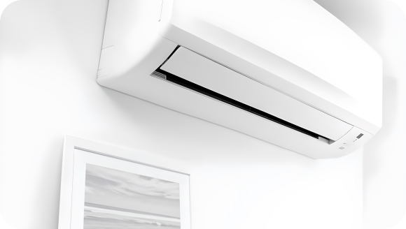
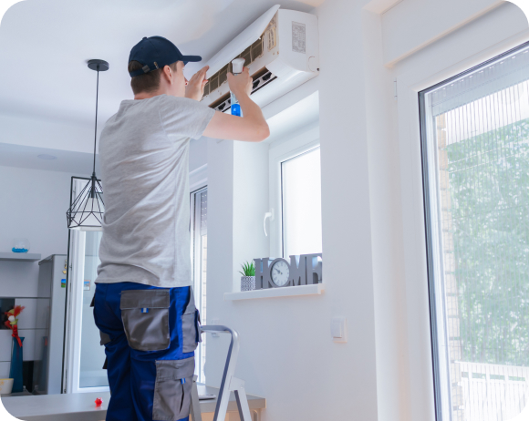
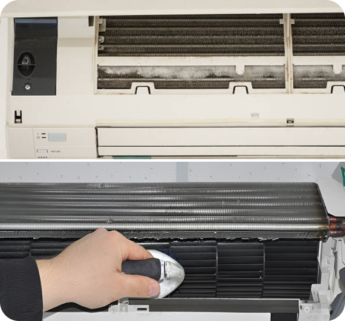

The Benefits of Energy-Efficient Air Conditioning Systems
The Benefits of Energy-Efficient Air Conditioning Systems In today's world, energy efficiency is a top priority for homeowners looking to reduce their carbon footprint and lower utility bills. When it comes to home comfort, investing in an energy-efficient air conditioning system offers numerous benefits beyond just saving money. In this article, we'll explore the advantages of choosing energy-efficient AC units for your home.
-
Cost Savings
One of the most significant benefits of energy-efficient air conditioning systems is the potential for significant cost savings on energy bills. Compared to older, less efficient models, modern energy-efficient units consume less electricity to achieve the same level of cooling, resulting in lower monthly utility expenses
-
Environmental Impact
Energy-efficient AC systems help reduce greenhouse gas emissions and combat climate change by consuming less energy and relying on more eco-friendly refrigerants. By minimizing electricity usage, homeowners can contribute to a healthier planet and reduce their environmental footprint
 -
Schedule Annual Professional Maintenance
While there are tasks you can perform yourself, such as changing filters and clearing debris, it's also essential to schedule annual professional maintenance for your air conditioner. A certified HVAC technician can inspect your system, identify potential issues, and perform necessary repairs or adjustments to keep it running smoothly
 -
Check and Clean the Coils
One of the simplest yet most crucial maintenance tasks for your air conditioner is regularly cleaning or replacing the air filters. Dirty filters restrict airflow, forcing your AC system to work harder and consuming more energy. Aim to clean or replace your filters every 1-2 months during the cooling season
 -
Ensure Proper Insulation and Sealing
Proper insulation and sealing around windows, doors, and ductwork help maintain a consistent indoor temperature and reduce the workload on your air conditioner. Check for any gaps or leaks and seal them with weatherstripping or caulk. Additionally, ensure your home is adequately insulated to minimize heat transfer
As the temperature rises, your home's air conditioner becomes an essential asset for keeping your indoor environment cool and comfortable. However, to ensure that AC unit operates efficiently and lasts for years to come, regular maintenance is key. In this article, we'll discuss five essential tips for maintaining your home air conditioner.